3350E vehicle direction control system vdc
- Path
- Descriptions > 33 BRAKING SYSTEM > 3350 DRIVE CONTROL' > 3350E vehicle direction control system vdc
- Kind
- system description
- Applies to
- all engines; all production periods
- Interactive page
- https://sloeber94.github.io/elrnDB-fPnd/en/#/2750939
Applies to: all engines; all production periods; only with equipment: ESP
In addition to the ABS/EBD system, vehicles are also fitted with the ESP system (electronic vehicle stability control) which includes the ASR function (control of drive with intervention on the brakes and the engine), the MSR function (engine braking torque adjustment during gear change), the HBA function (automatic increase in braking pressure during emergency braking) and the HHC function (assisting the driver in departures when the vehicle is on an incline).
See descriptions 3350E VEHICLE DIRECTION CONTROL SYSTEM VDC
.
This system and the additional functions are the latest developments of the Bosch 8.0 ABS system and improve the vehicle drive and stability features.
The ESP system, in particular, thanks to slewing sensors and steering wheel angle sensors, guarantees the monitoring of the dynamics of the entire vehicle thereby improving active safety.
The BOSCH 8 ABS braking system currently used is the most advanced available to guarantee safe driving. To achieve this an ESP system which includes ASR/MSR/HBA/HHC functions has been added to the ABS/EBD electrohydraulic control unit.
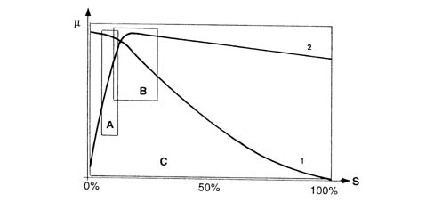
µ - Wheel grip
S - Slipping
A - EBD intervention area
A - ABS intervention area
C - ESP intervention area
1 - Lateral force curve
2 - Longitudinal force curve
As can be seen from the grip/slipping diagram, the area covered by the ESP system is larger than that covered by a conventional ABS/EBD system.
The ESP system switches on automatically when the vehicle is started up and cannot be switched off by the user; the button in the centre tunnel only switches off the ASR/MSR function and only when advisable (see ASR/MSR function).
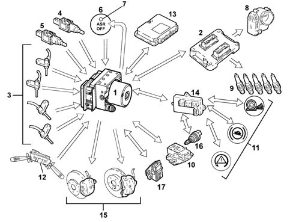
INPUT SIGNALS:
- Wheel speed sensors (from direct line) (3)
- Brake pedal sensor normally open (from direct line) (4)
- Brake pedal sensor normally closed (from direct line) (5)
- ASR off button (from direct line) (6)
- Engine management control unit (from C-CAN line) (2)
- Throttle angle position (from NCM C-CAN line) (8)
- Body computer (14)
- Handbrake lever position (from C-CAN line)
- Warning light status signal (from C-CAN line) (11)
- Slewing sensor (Z) (rotation of vehicle on vertical axis) (from direct line) (10)
- Lateral acceleration sensor (Y) (from direct line) (10)
- Longitudinal acceleration sensor (X) (from direct line) (17)
- Steering angle/steering wheel rotation sensor (from C-CAN line) (12)
- Robotized transmission control unit on versions where fitted (gear engaged status) (from C-CAN line) (13)
- Hydraulic system pressure sensor (from direct line) (1)
- Reverse gear engagement sensor (16)
OUTPUT SIGNALS:
- Brake pressure modulation control (15)
- Ignition advance reduction control (from C-CAN line) (9)
- Engine power management control (from C-CAN line) (8)
- Gear change inhibition on versions with robotized gearbox (from C-CAN line) (13)
- Wheel speed signal for speedometer and milometer (from C-CAN) (14)
- VSO signal (vehicle speed) (14)
- ABS/ASR/ESP/HHC warning light in panel (from C-CAN line) (11)
- ASR off LED (7)
Introduction
The ESP (Electronic Stability Program) is an active safety system for the control of the vehicle during dynamic manoeuvres that intervenes in emergency conditions. The ESP system, in addition to including the ASR/MSR/HBA/HHC functions described previously, keeps the vehicle stable in the case of brisk manoeuvres especially on slippery surfaces. It reacts quickly to both vehicle oversteer and understeer, restoring stability and allowing the driver to maintain full control of the vehicle. This has been achieved through the addition of special sensors: steering angle sensor and lateral acceleration/slewing sensor.
The management of the ESP system is entrusted to the A.B.S. electronic control unit, integrated with a special electro-hydraulic control unit, that allows action on the braking system independently of the action of the user.
The control unit processes the following signals:
- steering angle/steering wheel rotation speed sensor
- slewing/lateral acceleration sensor
- motorized throttle position
- wheel rpm sensors
- hydraulic braking system pressure sensor
and uses special algorithms in the electronic control unit software to obtain the figures for the dynamic control of the vehicle:
- longitudinal and transverse sliding between the wheels and the road surface
- axle drift.
Using these figures the system interprets the effective dynamics of the vehicle; having identified all the critical conditions due to environmental factors (e.g. surface with poor grip) or any errors made by the user (e.g. panic situations) and with subsequent intervention on the brakes and the drive torque, the vehicle is restored to good driving conditions.
The system interfaces with:
- N.C.M. (engine management node) for drive torque adjustment,
- N.C.R. (robotized gearbox node) for the management of gear changes on versions where fitted
- N.B.C. (Body Computer Node) for the transmission of the vehicle speed and the control of the warning lights.
The exchange of information between these components takes place via the C-CAN and B-CAN lines.
There is a dedicated line (line K) for the diagnosis of the system.
The system is combined with a power unit with a specific brake pump; in addition, the pipes between the brake pump and the A.B.S. control unit have a flexible insert because the diameter of the pipe (6mm) is larger than regular pipes (4 mm); this is designed to prevent adverse effects on the operation of the ESP at low brake fluid temperatures.
Operating strategies
As described previously, in addition to controlling the slipping of the vehicle in a lengthwise direction, the ESP system also controls slipping in a sideways direction and, as a result, controls the lateral stability of the vehicle.
The lateral stability of a vehicle depends on the reaction of the tyres to lateral forces and the adhesion force of the wheel with the road surface.
It should be remembered that the adhesion force of a wheel depends on the vertical load which depends on the situation the wheel finds itself in (resting or no load) and on the friction coefficient which depends on the road surface and tyre conditions.
When the vehicle is travelling in a straight line, the lateral forces do not really have an effect unless outside factors that increase its intensity intervene (e.g. a gust of wind or a change to a different surface), unlike when driving round a bend where there is a strong increase in lateral forces due to the increase in centrifugal force.
The action of the lateral forces produce a variation in the drift angle of the wheels and, consequently, a variation in the axle drift (drift angle = difference between the desired route and the effective route).
The lateral forces do not, however, act equally on all four wheels because they are not subject to the same load conditions, in effect the load on the wheel differs depending on the situation the wheel is in, namely:
- acceleration (lightening of the front axle and loading of the rear axle)
- braking (loading of the front axle and lightening of the rear axle)
- bend to the right/left (loading or the outer wheels and lightening of the inner wheels)
- accelerating/decelerating round a bend (combination of the cases mentioned above).
It is obvious that if the lateral forces acting on the individual wheels vary, there will also be a variation in the forces acting on the vehicle axles; consequently the lateral forces acting on the front axle overcome those on the rear axle and viceversa determining a rotation (moment0 on the vehicle axis of the vehicle (slewing axis).
The moment of slewing affects the behaviour of the vehicle producing either understeer or oversteer.
Understeer:
understeer for a vehicle is when, with increasing lateral acceleration, the drift angle for the front axle increases greatly compared with that of the rear axle. In this case, the vehicle tends to go straight ahead (take the curve wide) when cornering.
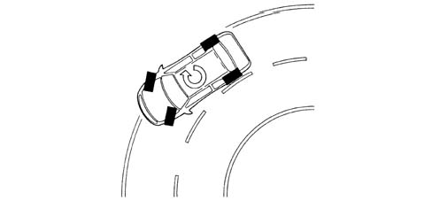
Operating strategies
Oversteer:
oversteer for a vehicle is when, with increasing transverse acceleration, the drift angle for the rear axle increases greatly compared with that of the front axle. In this case the vehicle tends to "do an about-face" (the rear axle tends to go straight, therefore the vehicle "hugs" the bend).
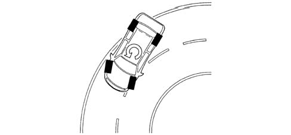
Operating strategies
To keep the effect of lateral forces under control and limit the slewing moment the ABS control unit calculates the nominal behaviour of the vehicle by means of:
- steering angle sensor
- accelerator pedal position
- brake pedal pressure
the control unit compares these parameters with the effective behaviour of the vehicle by means of:
- vehicle speed sensor (active sensors on the wheels),
- slewing/lateral acceleration sensor
if the values differ from the normal operation of the vehicle the control unit is capable of:
- detecting actions carried out by the user, in effect, through the position of the steering wheel it checks the number of degrees (wide radius or narrow radius bends) and the speed for rotating the wheels (sharp or gentle rotations) and, using the position of the throttle and the brake pressure when accelerating or braking, how the user is taking the bend or deviating from the straight path.
- detecting the actual behaviour of the vehicle given the environmental variables, e.g. slippery surface, reaction of the vehicle to incorrect manoeuvres by the user, etc., in order to identify the moment of slewing and the lateral sliding of the axles via the sensors on the four wheels and the slewing/lateral acceleration sensor.
These operations are necessary to superimpose the mathematical model mapped in the control unit on the effective behaviour of the vehicle in order to identify the state in which the vehicle is in (understeer or oversteer) and decide the action for the brakes and the engine management
Understeer round bends
The control unit detects the presence of understeer (mainly from the drift of the front axle), corrects the behaviour of the vehicle, braking the inner front and rear wheels round the bend in order to create an opposing moment which will lead the vehicle towards the centre of the bend and, possibly, reducing the drive torque.
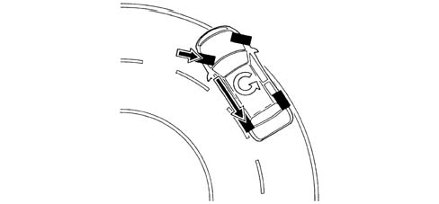
Oversteer round bends
The control unit detects the presence of understeer (mainly from the drift of the rear axle) and corrects the behaviour of the vehicle, braking the outer front wheel round the bend in order to create an opposite slewing moment. In special cases, in addition to the action on the brakes, there is also an increase in the speed of the inner drive wheel round the bend.
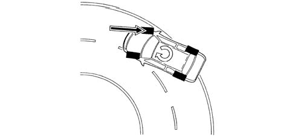
Sharp variations from the straight path (slalom/overtaking)
In the case of sharp variations from the path (e.g. overtaking, slalom), the control unit identifies possible oversteer and understeer conditions and corrects the path of the vehicle acting as described in the cases mentioned previously.
Sharp variation from the straight path (driving on different surfaces)
The control unit is capable of detecting deviations in the path and the prevalence of axle drift, correcting the path through suitable action on the brakes and the engine.
Sharp acceleration/deceleration
The control unit intervenes with the ASR/MSR strategy also controlling lateral acceleraion and, as a result, the action on the brakes and the engine torque.
ASR/MSR exclusion
If the ASR/MSR function is cut out, the following functions remain activated:
- ABS/EBD
- TC up to a speed of 40 km/h
- ESP with intervention of the brakes only
- HHC
ESP intervention display
The intervention of the ESP system is shown by the special warning light in the instrument panel flashing (5 Hz d.c. 50%).
ASR/MSR FUNCTION
This system, in addition to the normal anti-lock and brake distribution functions controlled by the ABS with EBD, also carries out the following functions:
- acceleration slipping adjustment (A.S.R.)
- adjustment of the engine braking torque (M.S.R.)
- locking the differential through action on the brakes (T.C.).
These functions are carried out through action on the drive torque (ASR/MSR) and the application of a braking force on one or both the drive wheels (TC).
If, during acceleration, one or both the drive wheels tend to slip, the ASR system asks the engine management control unit to reduce the torque transmitted to the wheels and, almost at the same time, without any intervention by the user, brakes the wheel or wheels.
If, in the case of strong deceleration, the wheels tend to lock, the MSR system requests the engine management control unit to adjust the engine braking torque in order to prevent the instability of the vehicle.
The system can be excluded by activating the button in the centre tunnel near the handbrake lever.
The LED in the button comes on and the display in the instrument panel signals that the ASR/MSR system has been switched off.
The warning light in the panel coming on indicates that the system is excluded on account of a fault recorded by the control unit.
The intervention of the ASR/MSR is signalled by the flashing of the warning light in the instrument panel.
Each time the vehicle is started up the ASR/MSR function is activated even if the function was switched off when the vehicle was switched off.
The system works through signals coming from the active sensors for the four wheels, from the brake lights switch and from the ASR on/off button.
It continuously compares the speed of the wheels on the same side of the vehicle (right front with right rear and left front with left rear) and when a difference in speed is detected between two wheels on the same side of more than 2-6 km/h (intervention level) it intervenes with the ASR logic
The ABS/ASR control unit converses continuously with the engine management control unit via the C-CAN line.
Intervention - intervention times for good road grip conditions
Drive torque reduction by the engine management control unit through the alteration of the ignition advances, 6/100 of a second after the slipping limit is exceeded.
A further reduction in torque through a decrease in the throttle opening (by the engine management control unit through the motorized throttle body after 15/100 of a second).
Intervention of the hydraulic system (braking force on the drive wheels) after 2/10 of a second.
Operation in poor grip conditions
The system is capable of recognizing these conditions by comparing the acceleration of the drive wheels with the torque transmitted by the engine (engine load from the engine management control unit).
The system behaves in the same way as for both drive wheels slipping in good road grip conditions and the intervention levels are at the lower limit.
Intervention-intervention times
Torque reduction by the engine management control unit through the alteration of the ignition advances, 6/100 of a second after the slipping limit is exceeded.
A further reduction in torque through a decrease in the throttle opening (by the engine management control unit through the motorized throttle body after 15/100 of a second).
Intervention of the hydraulic system, a braking action exerted on the wheel that it slipping to guarantee a resistive force on the side with poor grip (T.C.).
This resistive force allows the differential to transmit an equal torque with good grip.
Slipping of one wheel round bends in good grip conditions
The system recognizes the bend from the speed of the rear wheels (driven).
The system implements the same operating mode described for the "Slipping of one drive wheel only" condition with the intervention levels at the upper limit. The torque reduction is applied gently.
Slipping of one wheel round bends in poor grip conditions
The system implements the same operating mode described for the "Slipping of one drive wheel only" condition with the intervention levels at the lower limit. The torque reduction is accentuated (to ensure good side road holding).
Vehicle instability during deceleration in poor grip conditions
The system recognizes this condition from the engine load, from the speed of the front and rear wheels and from the brake pedal sensor. In this case there is an increase in drive torque through the intervention of the engine management control unit opeing the motorized throttel to overcome the natural instability of the vehicle due to the engine braking torque in poor grip conditions.
ASR/MSR function exclusion
If the function is excluded using the button on the centre tunnel which is advisable in cases where the vehicle is on paritcular surfaces (e.g: deep snow, deep mud, thick sand or gravel) or chains are fitted to the drive wheels, the ABS/EBD system remains activated.
Intervention levels
The different intervention levels between 2 and 6 km/h depend on environmental factors; some of the conditions have been described in the operating logics, others are:
- high acceleration level
- vehicle speed (see graph)
- type of tyres (normal or winter); with winter tyres and good grip, high intervention levels, e.g. with winter tyres and poor grip, low intervention levels. The system is capable of recognizing these conditions by comparing the acceleration of the drive wheels with the torque transmitted by the engine (engine load from the engine management control unit).
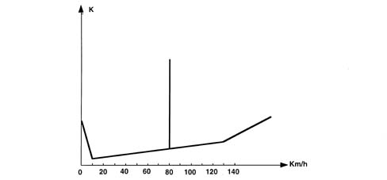
K - Slipping level
ASR/MSR system failure
In the case of a failure of the ABS system the ASR system is also disabled. The following problems exclude the ASR system only:
- engine C-CAN message errors
- C-CAN bus errors.
When these problems occur, the control unit activates the warning lights in the instrument panel and in the button.
The ASR warning lights logic is:
- with the ASR on, the warning light in the instrument panel is off and the LED in button is off
- with the ASR operating, the warning light in the instrument panel is intermittent and the LED in the button is off
- when the ASR is switched off, the warning light on the control panel is on. The warning light in the button is on
- with the ASR faulty, the warning lightsin the panel and the button are on
The warning lights are operated by the ABS control unit via the C-CAN like for ABS/EBD system.
Operation of the hydraulic system
The electro-hydraulic unit on the version equipped with ASR has 4 additional solenoid valves.
When the (normally closed) intake solenoid valve is activated, the additional quantity of fluid required to increase the pressure and brake the wheel(s) can be received.
When the (normally open) solenoid valve is activated it allows the modulated pressure produced by the pump necessary for the intervention of the ASR to be maintained in the brake caliper-pump circuit.
With the ASR function not switched on, the electronic control unit:
- does not supply the (N.C.) intake solenoid valve (2).
- does not supply the (N.A.) solenoid valve (3).
In this way the system operates during the following stages:
- pressure increase
- pressure maintenance
- pressure reduction
- pressure increase and resupply.
Like the ABS system.
See descriptions 3340A ABS CHECK/ADJUSTMENT DEVICES
.
Introduction
It has been demonstrated that in emergency conditions not all drivers manage to produce the best possible performance from their vehicle's braking system. In effect although many of them manage to apply the brakes quickly the force applied is limited.
There are two effects of this limitation: the first is linked to the fact that the braking force is the same as in normal conditions; the second is linked to the psychological fear of locking the wheels even when knowing that ABS is available. In these conditions emergency braking assistance is carried out by increasing the pressure in the system for the same force applied by the driver.
The same vehicle deceleration is produced with a load reduced by a third compared with normal braking. In addition, as is known, vehicle stopping distances depend not only on the braking distance but on the distance travelled during the braking reaction time and rest time. By reducing the latter the device allows the braking distance to be reduced, especially at high speed.
Operation
The HBA function (Hydraulic Brake Assist) is carried out electronically by the ABS control unit and is an ESP software module which controls the oil pressure uphill gradient when the driver brakes.
Emergency braking conditions are recognized when this gradient exceeds the set level.
The speed level is set for the device so that it only intervenes in actual emergency conditions without affect the manoeuvrability of the pedal in normal vehicle usage conditions in any way.
Introduction
The HHC function (Hill Holder Control) is designed to assist the driver during departures in forward gears or reverse when the gradient of the road is more than 2%. In effect the HHC is capable of automatically providing sufficient braking torque to keep the vehicle stationary until the clutch is fully released and the engine toruqe is sufficient to start the vehicle comfortably.
Operating strategy
The HHC is automatically activated when the brake pedal is pressed in conjunction with the following conditions:
- vehicle speed equal to zero,
- gradient more than 2%,
- clutch pedal pressed.
The moment the brake pedal is released, with all the other conditions being equal, the HHC keeps the braking system pressurized for 1.5 seconds to allow the driver to move their foot from the brake pedal to the accelerator pedal without the vehicle moving and without using the parking brake.
Once the accelerator is pressed, the HHC continues to keep the vehicle still for a further 1.5 seconds or until the engine torque is sufficient to start the vehicle.
The time indicated (1.5 + 1.5 secs.) is the maximum time that the control unit varies (obviously reduces it) if the succession of movements (brake pedal/acceleration/sufficient torque) by the driver is quicker.
Conversely, if the driver does not press the accelerator within the first 1.5 seconds following the release of the brake pedal or the necessary torque is not reached within the additional 1.5 seconds, the HHC removes the pressure from the hydraulic circuit, equal to 1 bar every 0.02 secs. so that the removal is not sudden.
In poor grip conditions the HHC is switched off for better vehicle control. This is because when stopped on an icy incline, if the HHC keeps the vehicles locked but the vehicle slips backwards it does not manage to produce minimum control of the actual vehicle whilst if the wheels are released it is possible move backwards keeping a straight line path.
A slipping recognition test lasting about 150 msecs. has been designed for these extreme conditions and it is implemented when the ABS or ASR is activated or one of the wheels locks just prior to the engagement of the HHC.
During the test stage the control unit (using the ABS parameters) defines which wheel is the most stable and then discharges the braking pressure for this wheel keeping the other three braked.
If the speed sensor for the vehicle not braked reports a speed other than zero, this means that the vehicle is moving even though all the other wheels are locked; this indicates poor grip conditions, therefore the HHC will switch off releasing the pressure in the entire braking circuit.
Conversely, if the wheel that is not braked remains still, this means that the the situation is stable and the HHC will continue to work.
Basic specifications:
.
- automatic engagement with speed at zero and vehicle gradient > 2%
- management of NQS failure warning light
- pressure maintenance time of 1.5 + 1.5 secs.
- automatic switching off prior to acceleration, clutch release or exceeding of maximum time from brake pedal release.
Necessary sensors and signals:
.
- reverse gear engaged from C-CAN
- clutch status from C-CAN
- accelerator pedal status from C-CAN
- brake pedal status from C-CAN
- engine torque value from C-CAN
- engine rpm from C-CAN
- longitudinal or tilt sensor
- brake pressure sensor (incorporated in the ABS control unit).
- Wheels stationary from rpm sensor signal
Warning light operation
The control unit activates the warning lights according to the following logic:
System status | ASR warning light in button | EBD warning light on NQS | ABS warning light on NQS | ESP warning light at NQS | HHC warning light at NQS | |
|---|---|---|---|---|---|---|
Check (4s) | EBD/ABS/ASR/ESP/HHC OFF for the first 500ms | ON | ON | ON | ON | ON |
Whilst driving | EBD/ABS/ASR ESP/HHC ON | OFF | OFF | OFF | OFF | OFF |
ASR switched off by button (1) | EBD/ABS/HHC ESP(2) ON ASR OFF | ON | OFF | OFF | OFF | OFF |
EBD faulty | EBD/ABS/ASR/ESP/HHC OFF | ON | ON | ON | ON | ON |
ABS faulty | EBD ON ABS/ASR/ESP OFF HHC ON/OFF | ON | OFF | ON | ON | ON |
ASR faulty | EBD/ABS ON ASR/ESP OFF HHC ON/OFF | ON | OFF | OFF | ON | ON/OFF (3) |
HHC faulty | EBD/ABS/ ASR/ESP ON HHC OFF | OFF | OFF | OFF | OFF | ON |
ESP faulty | EBD/ ABS/ASR ON ESP OFF HHC ON/OFF | OFF | OFF | OFF | ON | ON/OFF (3) |
Low brake fluid level or parking brake on | EBD/ABS/ASR/ ESP/HHC ON | OFF | ON | OFF | OFF | OFF |
ASR/ESP activated | EBD/ABS/ASR/ ESP/HHC ON | OFF | OFF | OFF | Intermittent 4Hz d.c. 50% | OFF |
HHC in action | EBD/ABS/ ESP/HHC ON | OFF | OFF | OFF | OFF | ON |
Operation of the hydraulic system
The electro-hydraulic unit on the version equipped with ESP has 4 additional solenoid valves.
When the (normally closed) intake solenoid valve is activated, the additional quantity of fluid required to increase the pressure and brake the wheel(s) can be received.
When the (normally open) solenoid valve is activated it allows the modulated pressure produced by the pump necessary for the intervention of the ESP to be maintained in the brake caliper-pump circuit.
With the brake pedal pressed, the electronic control unit:
- does not supply the (N.C.) intake solenoid valve (2).
- does not supply the (N.A.) solenoid valve (3).
In this way the system operates during the following stages:
- pressure increase
- pressure maintenance
- pressure reduction
- pressure increase and resupply
- like the ABS/EBD system.
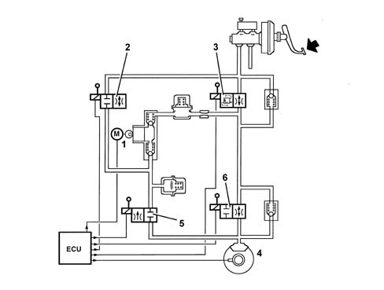
Operation of the hydraulic system
When the control unit detects that the ESP function is activated:
- supplies the hydraulic pump (1)
- supplies the (N.C.) intake solenoid valve (2)
- supplies the (N.A.) solenoid valve (3).
Therefore the pressure produced by the pump (1) reaches the brake caliper and is modulated, on the request of the electronic control unit, by the discharge (5) and pressurizing (6) solenoid valves.
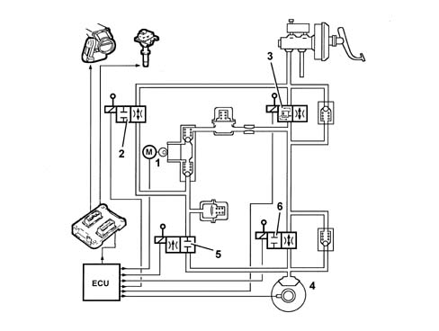
Electrohydraulic unit
The electro-hydraulic unit consists of an electronic control unit and an electro-hydraulic control unit:
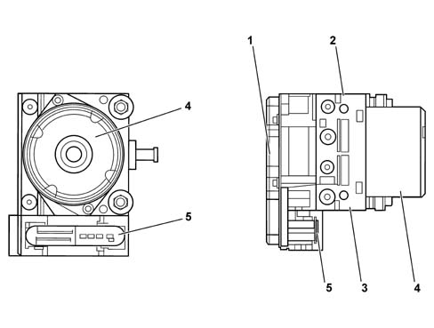
1 - Electronic control unit
2 - Electro-hydraulic control unit
3 - Brake fluid pressure sensor
4 - Recovery pump
5 - 46 pin connector
Electronic control unit
The electronic control unit carries out the following functions:
- acquiring the data coming from the wheel active sensors
- memorises the control parameters defined during the vehicle P.D.I.
- memorises the control software
- processes the data acquired
- controls the braking process
- detects faults in the braking system components
- memorizing the fault codes and activating the ABS/EBD/ASR/ESP/HHC warning lights via the C-CAN line
- transmitting and receiving data via the diagnostic connector
- conversing with the engine management control unit via the C-CAN line
- controlling the ASR function switching on/off process
- transmitting and receiving data via the C-CAN line.
The control unit is conected to the electrical system via a 46 pin connector.
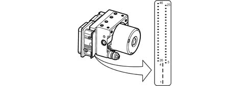
1. Power earth (on chassis)
2. +30 power supply _ 3. +30 power supply
4. Earth signal (on chassis) _ 5. Left front sensor signal
6. Left rear sensor positive
7. N.C.
8. Right rear sensor positive
9. Right front sensor positive
10. Right front sensor signal
11. Diagnostic K line for ABS
12. N.C.
13. N.C.
14. C.CAN-L
15. Sensor earth - Acceleration/slewing sensor and steering angle sensor
16. Signal for acceleration sensor
17. Longitudinal acceleration sensor signal
18. Signal for acceleration sensor
19. Longitudinal acceleration sensor power supply _ 20. Lateral acceleration signal
21. Longitudinal acceleration sensor earth _ 22. N.C.
23. N.C.
24. N.C.
25. C-CAN H_ 26.Left front sensor positive_ 27. Left rear sensor
28. +15 power supply _ 29. Right rear sensor _ 30. NA STOP signal _ 31. ASR exclusion control
32. N.C.
33. Speedometer signal
34. N.C.
35. C-CAN-H
36. N.C.
37. Test signal for acceleration sensor _ 38. N.C.
39. N.C.
40. N.C.
41. NC STOP signal - Brake lights control at brake pedal - Engine management node
42. N.C.
43. N.C.
44. N.C.
45 C-CAN-H
46. ASR on exclusion control
Electrohydraulic control unit
It performs the function of modulating the pressure of the fluid at the brake calipers via solenoid valves with the following operating stages:
- brake fluid pressure increase
- brake fluid pressure maintenance
- brake fluid pressure decrease.
The electro-hydraulic control unit consists of:
- twelve 2-way solenoid valves
- a dual circuit scavenging pump
- two low pressure accumulators
- two high pressure accumulators
- brake pressure sensor.
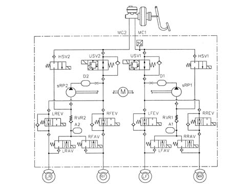
Specifications
For the active sensors, see the ABS
See descriptions 3340 ANTI-LOCK BRAKE SYSTEM (ABS)
.
Function
It has the task of switching the ASR/MSR system off and has an LED.
The button is located in the centre panel to the right of the emergency control.
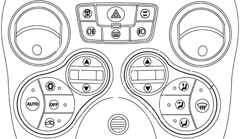
1 - LED
2 - Off button
Specifications
The steering angle sensor has the task of measuring the angles in degrees and the rotation speed of the steering wheel and making these figures available via the C-CAN (steering angle sensor node).
Location
The steering angle sensor is fitted inside the electrical steering and is not available from spares on its own.
The replacement of the steering angle sensor requires the zeroing and initialization procedure using the Examiner.
Operation
The sensor measures the following via internal electronics:
- the angular position of the steering column
- the rotation speed of the steering column.
This information is processed directly by the sensor and is made available at the brake node via the C-CAN.
The sensor has an angular measurement range of 780° - -780° and an angular resolution of 0.1 °
The sensor must be zeroed in relation to the position of the steering wheel in order to work properly. This calibration is carried out using the diagnostic equipment (EXAMINER).
The sensor has an autodiagnostic function and is capable of carrying out a check on the plausibility of the information processed.
Specifications
The slewing/lateral acceleration sensor has the task of detecting rotation on the vehicle's vertical axis (slewing) and measuring lateral acceleration.
The connection to the ABS control unit is direct.
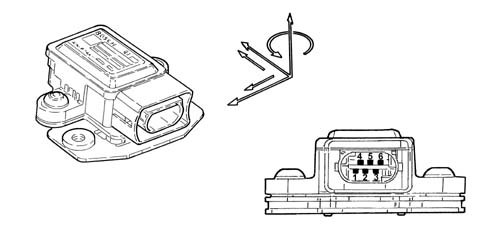
Specifications
The sensor has the following functional specifications:
Supply voltage:
- Minimum value 8.2V
- Maximum value 16V
- Rated value 12V
Operating temperature:
- Minimum value -40°C
- Maximum value +85°C
Current absorption at 12 V:
- Rated value 70mA
Slewing sensor:
- Measurement range ± -100 °/s
- Resolution ± -0.3°/s
Lateral acceleration sensor:
- Measurement range ± -1.8 g
Composition
The sensor consists of a plastic casing that houses the sensitive elements which detect slewing, lateral acceleration, longitudinal acceleration/deceleration and the electronic management.
The sensor has a connector with six pins all of which are connected.
Pin 1, Slewing sensor reference signal
Pin 2, Slewing sensor test signal from ABS control unit
Pin 3, Sensor 12V power supply
Pin 4, Yaw signal in °/Sec
Pin 5, Lateral acceleration signal in "g".
Pin 6, Earth
Location
The sensor is located in the centre of gravity area under the centre console near the handbrake lever.
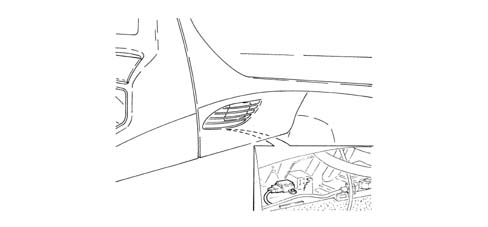
Operation
The sensor receives a direct power supply from the ABS control unit and, simultaneously, provides the slewing and lateral acceleration signal via the sensitive elements.
The slewing signal is processed directly by the sensor and supplied to the ABS control unit with a reference signal superimposed.
The slewing signal has a range of between:
- lower limit 0.65V
- upper limit 4.35V
- reference signal 2.5V.
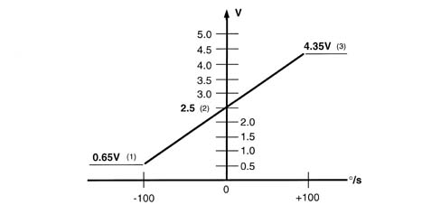
1 - Upper limit
2 - Reference signal
3 - Lower limit
Operation
The sensor provides the ABS control unit with a signal for fault diagnosis and safety functions.
Specifications
The sensor has the task of measuring X acceleration of the vehicle (tilt) and detecting slewing and longitudinal acceleration.
The connection to the ABS control unit is direct.
Composition
The sensor consists of a plastic casing that houses the sensitive elements which detect slewing, longitudinal acceleration/deceleration and the electronic management.
The sensor has a connector with three pins all of which are connected.
Composition
Pin 1, Earth
Pin 2 Signal
Pin 3 Positive from ABS control unit
Location
The sensor is located in the centre of gravity under the driver's seat.
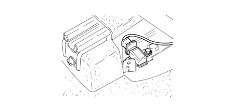
Operation
The sensor receives a direct power supply from the ABS control unit and, simultaneously, provides the slewing and acceleration signal via the sensitive elements.
The signal is processed directly by the sensor and supplied to the ABS control unit with a reference signal superimposed.